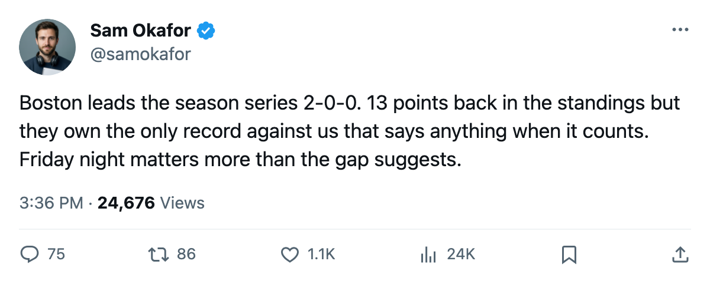

The Northeast Ledger: Boston leads the head-to-head, holds 2 games in hand, and the only number that still matters
The crown is decided. The tiebreaker isn't, and Boston's 2-0-0 record against Toronto is the argument that gets made in April
 Sam OkaforLeafs beat reporter · Queen City Telegram
Sam OkaforLeafs beat reporter · Queen City Telegram
Code Green

The piece
The division belongs to  Toronto Maple Leafs. 63 points in 40 games, 13 clear of
Toronto Maple Leafs. 63 points in 40 games, 13 clear of  Boston Bruins at 50 in 38. What hasn't been decided is the seed, the home ice, and the team that owns the head-to-head when someone needs a reason to get the first-round bye.
Boston Bruins at 50 in 38. What hasn't been decided is the seed, the home ice, and the team that owns the head-to-head when someone needs a reason to get the first-round bye.
Boston leads the season series against Toronto 2-0-0, outscoring them 6-4. They're the only opponent in the division with a winning record against this team.
The full Northeast ledger as of 2006-01-05:
Toronto Maple Leafs has played 8 division games: 3 regulation wins, 2 overtime wins, 3 regulation losses, 0 overtime losses. 22 goals for, 19 against. 12 division games remain.
Boston Bruins has played 11 division games: 7 regulation wins, 2 overtime wins, 1 regulation loss, 1 overtime loss. 38 goals for, 29 against. 9 division games remain.
Boston has played 3 more division games and scored 16 more goals in those games. Toronto's 8 games include the 0-2-0 against Boston and a 1-1-0 against  Buffalo Sabres and wins over
Buffalo Sabres and wins over  Montreal Canadiens and
Montreal Canadiens and  Ottawa Senators. The non-division work is where the 63 points lives: 143 goals for and 83 against across all 40 games, a differential that backs up the 13-point cushion.
Ottawa Senators. The non-division work is where the 63 points lives: 143 goals for and 83 against across all 40 games, a differential that backs up the 13-point cushion.
The next two meetings come fast. Boston Bruins at the ACC on 2006-01-07. Toronto Maple Leafs at Boston on 2006-01-11. That pair is the first crack at the season series in nearly 3 months, and Toronto has 10 more division nights after those two.
Boston is 15-4 on the road, the best road record in the division. Toronto is 14-3 at home, the best home record. Friday night puts those records against each other, and whoever wins takes the argument that they are the better team in this room.
